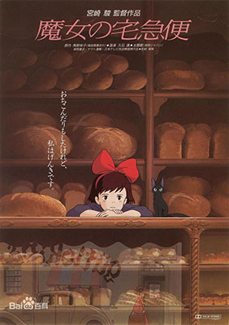
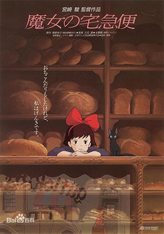
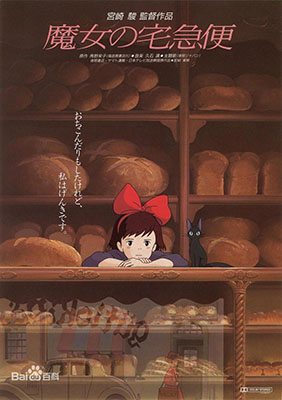
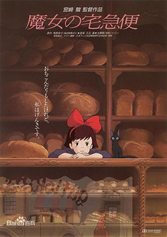

 

五岁的宗介与妈妈理莎，住在一个靠海小村庄的山岸上。身为船长的爸爸长年出海，留下宗介与妈妈相依为命。因此五岁的宗介从小就超龄的懂事，也知道自己必须担起家中的责任，要代替父亲照顾妈妈。一天当他在山崖下岩石遍布的海滩上玩耍，他拾回了一只头困在玻璃瓶里的人鱼波妞，宗介救出波妞并且将她养在一个绿色的塑胶水桶里。 波妞与宗介相互着迷。宗介跟波妞说:“别担心，我会保护你、好好照顾你。”，但是波妞的父亲魔法师藤本，逼着波妞跟他回海里。波妞坚决不肯并开始大吵大闹，她心意已决，要变成人类小女孩回到宗介的身边，于是波妞竟然决定离家出走。就在她离家之前，波妞把爸爸最珍藏的“生命之水”倒到海水里。这个举动造成极大的动荡，海平面开始快速上升，波妞的妹妹们都变成了鱼形的巨大海浪并吞噬了宗介住的小镇，还差点连宗介山崖上的家都波及。
琪琪今年13岁了，按照魔法界的规矩，魔法少女年满13岁就要出外进行为期一年的修行。所以琪琪带着宠物黑猫吉吉踏上了修行之旅。然而，修行之旅开始得并不顺利，当琪琪来到海边一座大城市时，人们并没有欢迎她的到来，人人都不搭理她。幸亏琪琪有一颗善良的心，当她拾到了一件别人的失物时，热心的琪琪找到了失主。她的善良赢得了面包店老板娘的好感，琪琪就在面包店开始了她用飞行魔法为客人服务的快递业务。琪琪很快适应了新环境，一次，一个热衷于飞机制造的男孩邀请琪琪去参加飞行俱乐部的聚会，途中琪琪因为帮一位老大娘送东西而被雨淋了。从此，琪琪突然发现自己的魔法正在一天天变弱。 可得知自己的好朋友蜻蜓被失控的飞行船带到天上时，她摒弃杂念，不顾自己的朴素穿着和拼命飞翔的窘态是否会被围观众人嘲笑和议论，勇敢地冲了上去。也是这份突破自我的勇气，让她重新拥有了神奇的魔力，在千钧一发之际救下了好朋友蜻蜓。欢呼雀跃的人群中，大家热情称赞她的善良和勇敢。
继母因无力负担生活，将苏菲和她的两个妹妹都送到了制帽店去当学徒。两个妹妹很快先后就离开了制帽店去追寻各自的梦想，只有苏菲坚持了下来。一天，小镇旁边来了一座移动堡垒，传说堡垒的主人哈尔专吸取年青姑娘的灵魂，所以小镇的姑娘都不敢靠近。 一个恶毒的巫婆为了报复苏菲与哈尔见面，用巫术把她变成了一个80岁的老太婆，而且苏菲还不能对别人说出自己身中的巫术。无奈，苏菲决定独自一人逃离小镇。天黑了，虚弱的苏菲没走多远，来到了移动城堡。心想自己已经是老太婆了，苏菲壮着胆子走进了城堡。不想，遇到了和她遭遇相同的火焰魔。两人约定彼此帮助对方打破各自的咒语……
借东西的小人阿莉埃蒂》是日本吉卜力工作室制作的动画电影，也是米林宏昌执导的首部电影。影片于2010年7月17日在日本正式上映。影片剧情改编自欧洲儿童文学的同名奇幻故事，英国作家玛丽·诺顿的奇幻小说《地板下的小人》，秉承吉卜力的传统，《借东西的小人阿莉埃蒂》质朴而充满童趣，与此同时，又在不经意间训说着大而而深的主题。将原作舞台从1950年代的英国迁移至2010年的东京都小金井市，讲述生活在郊外房子地板下身长10厘米的14岁少女，与来此化疗养的少年相识的故事。